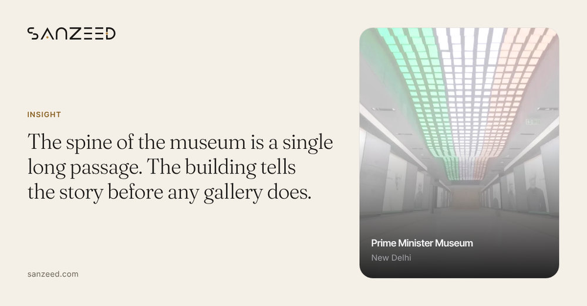
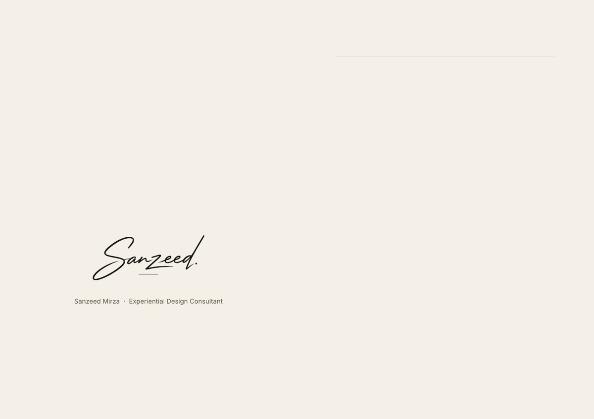

Brand voice & communication.
A museum’s wall label, written by the person who built the room. Seven principles, eight tones, one vocabulary, a headline bank and the boilerplate — all from 01_BRAND_STRATEGY.
- 24.1Voice principles
- 24.2Tone by situation
- 24.3Vocabulary and mechanics
- 24.4Headline bank, boilerplate, calls to action
The voice in one line.
Precise, calm, first person, short. From Brand_Voice_and_Tone.md; every example is confirmed copy from the site.
| Principle | Do | Example from sanzeed.com |
|---|---|---|
| First person, singular | “I”, “me”, “my”. The brand is one person. | “I lead the whole room — story, space, graphics, media and the team that builds it.” |
| Short sentences, long ideas | One thought per sentence. Let a full stop land. | “The script comes first. Every room, screen and surface carries a line of it.” |
| Name the deliverable | Say what the client receives, concretely. | “You receive a concept book and a walkthrough film.” |
| Spatial vocabulary | Rooms, routes, thresholds, galleries, light, dwell time, opening night. | “Galleries planned as a route, not a floor plan.” |
| End on the image | Finish paragraphs on a picture, not a claim. | “Visitors walk the whole line of leaders without a map, and come out knowing the order by heart.” |
| Plain numbers | Numerals, no inflation. | “90 projects, one continuous craft.” |
| Warm, not casual | Hospitable; never slangy or jokey. | “Tell me about the room. A few lines are enough.” |
One voice, eight dials.
The voice does not change; the dial does. Monumental on the hero, documentary in a case study, warm in a reply.
| Situation | Tone dial | Example |
|---|---|---|
| Website headline / hero | Monumental, quiet | “Experiential design you can walk into.” |
| Case study | Documentary, sequenced (The brief · The idea · The walk · What visitors do) | “A corridor you walk in order.” |
| Proposal / quotation | Precise, deliverable-led, no adjectives | “Step 02 — Direct. You receive a concept book and a walkthrough film.” |
| Email / WhatsApp reply | Warm, brief, specific next step | “Thank you for writing. I’ve read the brief twice. Could we speak on Thursday for twenty minutes?” |
| LinkedIn post | Observational, one insight, one image | “The spine of the museum is a single long passage. The building tells the story before any gallery does.” |
| Social caption | Wall-label: title, place, one line | “Ram Katha Show · Ayodhya. The script came first.” |
| Error / empty states | Helpful, unhurried | “Nothing in this room yet. Try another filter or clear the search.” |
| Thank-you / after opening | Personal, signed | “The doors are open. Thank you for trusting me with the room. — Sanzeed.” |



Words from the room.
The words the brand uses and the words it never does; the typographic mechanics that make copy look like Sanzeed before it is read.
room · route · threshold · gallery · walk · light · lit · carry · opening night · wall label · visitor’s book · the one central story · concept book · walkthrough film · prototype room · calm · held in one hand · monumental
cutting-edge · innovative · world-class · synergy · leverage · immersive (as a filler adjective — only as the named service) · solutions · best-in-class · passionate · 360° · wow
| Mechanic | Rule |
|---|---|
| Headlines | Sentence case, end with a full stop. The last word may be set in the muted or gold colour (“Eight rooms, lit.”) |
| Eyebrows | Small caps, letter-spaced, gold: NOW SHOWING · METHOD · ABOUT · JOURNEY · GET IN TOUCH |
| Counters | Three digits, “001”. Steps: “STEP 01” |
| Dashes | Spaced em dash on the website ( — ); en dash for ranges (2018 – 2026) |
| Currency | ₹ with Indian grouping (₹25 lakh, ₹1 crore) |
| Dates | “Aug 2026 — Present”; “5 November 2026” in documents |
| Sign-off | “— Sanzeed Mirza” (quotes) · “Sanzeed.” (signature mark) · “Sanzeed Mirza · Experiential Design Consultant” (formal) |
| Naming | SANZEED / Sanzeed / @sanzeed for the mark and handles; Sanzeed Mirza for anything formal; never “Sanzeed Studio” |
Lines that are already approved.
Use these verbatim before writing new ones. New headlines follow the same mechanics and pass the three tests.
Sanzeed Mirza is an Experiential Design Consultant based in New Delhi, working with institutions and brands wherever the project is. Over fifteen years he has directed more than 90 projects, including 60+ museums and experience centres and 15 projection-mapping and light shows, among them the Prime Minister Museum in New Delhi, the Ram Katha Show in Ayodhya and Buddha Park in Uttarakhand. He works independently with museums, cultural institutions and brands as creative lead from first concept to opening day. sanzeed.com
10 words · Experiential design consultant. Museums, pavilions and shows you can walk into.
25 words · Sanzeed Mirza is an independent experiential design consultant in New Delhi. Fifteen years in, he leads the whole room — story, space, media and team — for institutions and brands.
| Primary | Secondary | Tertiary |
|---|---|---|
| Tell me about the room → | See the work | WhatsApp @sanzeed |
| Write in the visitor’s book → | About Sanzeed | Save contact |
| Get in touch | Watch the film |
Response promises · “The first conversation is always free.” · “I reply within two working days.” · “If it is urgent, WhatsApp is fastest.”